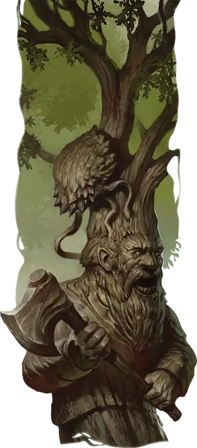

Короусец
Barkburr
Маленькое Растение, без мировоззрения

Класс Доспеха 16 (природный доспех)
Хиты 52 (8к6 + 24)
Скорость 10 футов, лазая 10 футов
| мод | спас | ||
|---|---|---|---|
| СИЛ | 16 | +3 | +3 |
| ЛОВ | 6 | −2 | −2 |
| ТЕЛ | 16 | +3 | +3 |
| мод | спас | ||
|---|---|---|---|
| ИНТ | 1 | −5 | −5 |
| МДР | 15 | +2 | +2 |
| ХАР | 1 | −5 | −5 |
Навыки Атлетика +5
Иммунитет к урону психическая энергия
Иммунитет к состояниям глухота, испуг, ослепление, очарование
Чувства слепое зрение 60 футов (слеп за его пределами), пассивное Восприятие 12
Опасность 3 (700 опыта)
Бонус мастерства +2
Особенности
Обманчивая внешность. Если короусец неподвижен к началу боя, то он совершает бросок Инициативы с преимуществом. Более того, если существо не видело перемещений или действий короусца, то это существо должно преуспеть в проверке Интеллекта (Расследование) Сл 18, чтобы понять, что короусец живой.
Пружинистый прыжок. Короусец совершает прыжки в длину на расстояние до 30 футов и прыжки в высоту на расстояние до 15 футов, хоть с разбегом, хоть без него. Прыжки короусца могут превысить его скорость, если его оставшееся перемещение уже не равно 0.
Действия
Мультиатака. Короусец совершает две атаки Ядовитым шипом, и по возможности использует Одеревенение.
Ядовитый шип. . Рукопашная атака оружием: +5 к попаданию, досягаемость 5 фт., одно существо. Попадание: 5 (1к4 + 3) колющего урона плюс 7 (2к6) урона ядом, и короусец прикрепляется к цели. Пока короусец прикреплен, он не может совершать атаки Ядовитым шипом, а цель становится опутанной из-за того, что ее тело начинает обращаться в дерево.
Короусец может отцепиться, потратив 5 футов перемещения в на своем ходу. Любое существо, в чьей досягаемости находится короусец, в том числе и сама цель, может действием оторвать его, преуспев в проверке Силы (Атлетика) Сл 13.
Одеревенение. Короусец выбирает целью существо, к которому прицепился, после чего оно должно совершить спасбросок Телосложения Сл 13. При провале цель становится окаменевшей до тех пор, пока не будет освобождена заклинанием высшее восстановление [greater restoration] или подобным эффектом. Вместо камня цель превращается в дерево. Все носимое и несомое снаряжение цели становится частью коры этого дерева.
Описание
Короусцы — одушевленные, ядовитые Растения, которые спонтанно вырастают из деревьев, когда искра природной магии оседает в них. Они выглядят как похожие на полипы узлы коры и древесины, неотличимые от обычных наростов. Короусцы часто действуют в интересах защиты рощи или леса.
Некоторые из них цепляются за деревья, из которых проросли, когда как другие медленно бродят, пока не встретят существ, угрожающих естественному порядку леса. Обнаружив такое существо, короусец прыгает на вторженца и впрыскивает в него ядовитый сок, который быстро и болезненно превращает его в дерево.